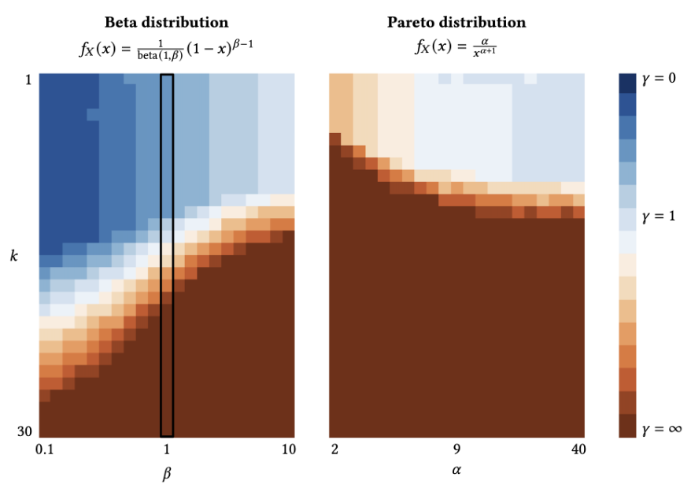

Reconciling the accuracy-diversity trade-off in recommendations (调和推荐系统中的准确率-多样性权衡)
- 会议/期刊: WWW 2024（arXiv 2023-07）
- 作者与机构: Kenny Peng、Emma Pierson、Nikhil Garg（Cornell Tech），Manish Raghavan（MIT），Jon Kleinberg（Cornell）
- 推荐链路定位: 重排 / 列表构建阶段的目标函数与离线评估指标设计（非模型架构）
- 研究方向: 去偏公平与可信推荐 / 列表级重排
- 论文原文: https://arxiv.org/abs/2307.15142v1
- 开源代码: 暂未开源
TL;DR (1分钟核心速览)
本文指出准确率-多样性权衡的根源在于常规准确率指标忽略了用户消费约束。作者构建极简模型：用户在 \(n\)条推荐中只消费价值最高的\(k\)条。证明计入该约束时最优解因边际收益递减而自然多样，按期望总效用（\(k=n\)）优化则完全同质。以\(\gamma\)-同质性统一刻画多样性，证明\(n\to\infty\)时其指数完全由条件价值分布尾部决定：有界\(\beta/(\beta+1)\)、指数尾\(1\)、Pareto 尾\(\alpha/(\alpha-1)\)。无真实数据集，以解析定理加\(n=30\) 的数值模拟验证。
Background & Motivation (背景与核心矛盾)
- 主流范式: 工业界把准确率（CTR/NDCG/期望效用之和）与多样性（校准、MMR、覆盖度、DPP）视为两个目标，在重排阶段用加权融合、固定配额或约束优化显式注入多样性。
- 前人局限: 其一，缺乏"为何存在权衡"的第一性解释，多样性只能凭启发式注入，无法说明其代价与最优量；其二，常规准确率指标把列表当作独立条目之和（等价 \(k=n\)），与"用户只翻前几条、只消费其中一两个"的真实行为不符。
- 核心洞察 (Key Insight): 一旦目标换成 top-\(k\)期望效用，\(\max\) 算子使同类型物品的边际收益递减——第 5 部爱情片对"今晚只看一部"的用户几乎无用，于是最优解自动分散到其他类型。多样性是目标函数的副产品，不是外加偏好。
- 本文切入点: 构造可完全解析的最小模型（单一偏好类型 + 已知价值分布 + 消费约束 \(k\)），渐近求出最优列表的类型表示，从而把"权衡"归因为评估指标缺陷而非用户偏好冲突。
Method (核心方法设计)
1. 整体框架 (Overall Architecture)
模型三要素：类型先验 \(p_t\)（用户偏好类型\(t\)的概率）、条件价值分布\(D\)（偏好该类型时单件物品价值\(X^{(t)}_i\sim D\)，否则为 0）、消费约束\(k\)。系统只知分布不知实现值，需选\(n\)件物品使前\(k\)件最高价值之和的期望最大。由于条件独立，目标可分解为\(\max_{\sum_t a_t=n}\sum_{t=1}^{m}p_t h(a_t)\)，其中\(h(a)\)由次序统计量刻画。作者用\(\gamma\)-同质性度量解的类型结构，再用一条渐近引理把\(h\)的尾部形态映射为闭式的\(\gamma\)，得到"分布尾部\(\to\) 多样性档位"的完整相图。
flowchart TD
A["输入：类型先验 p_t、条件价值分布 D、列表长度 n、消费约束 k"] --> B["目标分解：最大化类型加权次序统计量效用之和"]
B --> C["次序统计量刻画 h(a)：边际收益递减"]
C --> D["渐近引理：h 的尾部形态决定多样性指数 gamma"]
D --> E["闭式刻画：有界 beta/(beta+1)、指数尾 1、Pareto 尾 alpha/(alpha-1)"]
E --> F["设计启示：评估改用 top-k 效用 + 多样性诊断"]2. 关键设计拆解 (Key Designs)
-
消费约束目标与边际收益递减：若 \(k=n\)，由期望线性性目标退化为线性，最优解只堆最高\(p_t\)的类型（同质）；把\(k\) 固定则 \(h(a)=\sum_{i=1}^{\min\{k,a\}}\mu_D(a-i+1,a)\)， 其中 \(\mu_D(j,a)\)是\(a\)个\(D\)样本第\(j\)大次序统计量的期望。\(k\)固定时\(h\)是凹函数（对数型或幂律型），凹目标在单纯形上的最优解按\(p_t\)加权"水位均衡"，故类型必然混合。物理直觉：多推荐一件同类型物品只在"它恰好刷新前\(k\)高"时才有增益，概率随\(a\) 递减。
-
\(\gamma\)-同质性与尾部相图：定义类型表示\(r_t(S)=|S_t|/|S|\)，称序列\(\{S_n\}\)为\(\gamma\)-同质若 \(r_t(S_n)\to p_t^{\gamma}\big/\sum_{i=1}^{m}p_i^{\gamma}\)。 \(\gamma=0\)为均等表示、\(\gamma=1\)为比例表示（即 Steck 的 calibrated recommendation）、\(\gamma=\infty\)为完全同质。技术枢纽是引理：若\(A-h(a)\sim B a^{\sigma}\)（\(\sigma<0\)），则最优解满足\(r_t\propto p_t^{1/(1-\sigma)}\)。据此，有界 pdf 尾部\(f_D(x)\sim c(M-x)^{\beta-1}\)给\(\sigma=-1/\beta\)，得\(\gamma=\beta/(\beta+1)\)；指数尾给\(h\sim B\log a\)，得\(\gamma=1\)；Pareto\((\alpha)\)给\(h\sim B a^{1/\alpha}\)，得\(\gamma=\alpha/(\alpha-1)\)。直觉：重尾意味着"再抽一个同类型样本仍可能刷新纪录"，边际收益不衰减，故更集中；有界分布一旦逼近上界\(M\)，追加样本几乎无增益，故更分散。
-
跨类型成功率不均的悖论（Theorem 3）：当类型内成功率恒为 \(q_t\) 时， \(r_t(S_{n,1})\propto 1\big/\log\frac{1}{1-q_t}\)， 且与流行度 \(p_t\)无关。\(q_t\) 越小的类型反而被推荐越多——对应超市给冰淇淋的货架远多于牛奶：想买牛奶的人多但口味宽容，少量 SKU 即可满足；冰淇淋需求小却口味挑剔，需更多品类覆盖。
注：本文无训练目标、负采样与在线推理；其"推理开销"是解析闭式，可迁移的工程产物是评估目标替换——把离线指标由 \(\sum_i \hat{y}_i\)换成 top-\(k\)期望效用，并以\(\gamma\)-同质性诊断列表结构。
Experimental Setup & Evaluation Protocol (实验设置与评估协议)
- 数据集与预处理: 本文为理论工作，不使用任何真实推荐数据集，无
5-core过滤与特征工程。验证由两部分构成：① 渐近解析（Thm 1–3、Cor 1、Prop 2、Prop 4）；② 数值模拟，参数设置如下表（\(m=2\)，\(p=(0.7,0.3)\)，\(n=30\)）：
| 模拟设定 | 类型数 \(m\) | 列表长度\(n\) | 先验\(p\) | 消费约束\(k\) | 分布\(D\) | 估计方式 |
|---|---|---|---|---|---|---|
| 有限 \(n\)多样性估计 | 2 | 30 | (0.7, 0.3) | 全范围\(1\le k\le 30\) | Beta\((\cdot,\beta)\)、Pareto\((\alpha)\) | 每个次序统计量\(10^6\) 次蒙特卡洛采样 |
| \(n\)增长曲线 | 2 | 0–50 | (0.6,0.4)…(0.9,0.1) | \(k=1\) | Ber\((0.4)\) | 枚举\(a_1+a_2=n\) 取最优 |
- 数据划分与防穿越 (Splitting Strategy): 不适用（无学习过程、无历史交互，不存在穿越风险）；模拟中采样仅用于估计次序统计量期望，与优化目标共享同一已知分布。
- 排名评测协议 (Ranking Protocol): 不适用 Full-Ranking / Sampled Ranking。评估量为最优解的类型表示 \(r_t\) 与\(\gamma\)指数，属确定性全枚举（对\(a_1+a_2=n\) 的全部组合求精确最优），无负采样、无显著性检验（结果由定理保证而非统计推断）。
- 对比基线与超参设置: 对比轴为"有消费约束 \(S_{n,k}\)vs 无消费约束\(S_{n,n}\)"，并以 Steck 的 calibrated recommendation（\(\gamma=1\)）作为参照标准；无 embedding 维度、无学习率等超参。
Key Experimental Results (实验关键数据)
1. 主结果对比 (Main Results)
下表整合 Thm 1–3 的渐近结论（\(n\to\infty\)，\(k\)固定）。Improv. 一栏表示相对无约束基线\(S_{n,n}\)的多样性档位变化（\(\gamma\) 越小越多样）：
| 条件价值分布 \(D\) | 尾部行为 | \(S_{n,k}\)（有消费约束）的\(\gamma\) | \(S_{n,n}\)（无约束基线）的\(\gamma\) | 相对基线的多样性档位 Improv. |
|---|---|---|---|---|
| 有限离散分布 | 有限支撑 | 0（均等表示） | \(\infty\) | 由完全同质\(\to\) 完全均等 |
| Beta\((\cdot,\beta)\)型有界 pdf | 上界\(M\)，指数\(\beta\) | \(\beta/(\beta+1)\in(0,1)\) | \(\infty\) | 介于均等与比例之间 |
| Exp\((\lambda)\) | 指数尾 | \(1\)（比例表示） | \(\infty\) | 恰好复原 Steck 校准标准 |
| Pareto\((\alpha),\ \alpha>1\) | 重尾 | \(\alpha/(\alpha-1)>1\) | \(\infty\) | 低于比例，重尾削弱多样性 |
| Ber\((q_i),\ q_i\propto i^{-\alpha},\ \alpha<1\) | 缓衰减 | \(0\) | \(1/\alpha>1\) | 均等 vs 低于比例 |
| Ber\((q_i),\ \alpha=1\) | 临界 | \(1/(1+c)\) | \(1\) | 比例 vs 比例 |
| Ber\((q_i),\ \alpha>1\) | 快衰减 | \(1/\alpha<1\) | \(1/\alpha\) | 二者一致，均优于比例 |
| Ber\((q_t)\)跨类型不均 | — | \(r_t\propto 1/\log\frac{1}{1-q_t}\) | \(\infty\)（仅含\(\arg\max_t p_tq_t\)） | 低成功率类型被过度表示 |
2. 消融实验 (Ablation Study)
以"移除消费约束 / 改变约束强度 / 改变尾部"作为消融轴，数值模拟（\(n=30\)，\(m=2\)，\(p=(0.7,0.3)\)，\(10^6\) 采样）结果：
| 消融设置 | 数值估计的最优 \(\gamma\) | 对应理论值 | 结论 |
|---|---|---|---|
| \(D=U[0,1]\)，\(k\le 0.4n\) | \(\approx 0.50\) | \(1/2\)（Prop 2 精确界） | 与理论吻合，且对\(k\) 不敏感 |
| \(D=U[0,1]\)，\(k\to n\) | \(\to\infty\) | \(\infty\) | 移除消费约束即退化为同质 |
| \(D=\)Beta\((0.5,\cdot)\)（尖峰） | \(\approx 0.33\) | \(1/3\) | 更尖的有界分布更均等 |
| \(D=\)Beta\((3,\cdot)\)（近平顶） | \(\approx 0.75\) | \(3/4\) | 近平顶更接近比例 |
| \(D=\)Pareto\((2)\) | \(\approx 2.0\) | \(2\) | 重尾显著削弱多样性 |
| \(D=\)Pareto\((3)\) | \(\approx 1.5\) | \(1.5\) | 尾部越重（\(\alpha\) 越小）越同质 |
3. 关键实验发现 (Key Findings)
- 消费约束是多样性的充分条件，不需任何显式多样性偏好：在 \(D=U[0,1]\)、\(p=(0.7,0.3)\)下，Prop 2 给出误差界\(|r_t(S_{n,k})-\sqrt{p_t}/\sum_i\sqrt{p_i}|\le (m+1)/n\)，且只要\(k\le(\sqrt{p_{\min}}/\sum_i\sqrt{p_i})n-m-1\)（约\(0.4n\)）即成立；即\(k\) 在常数比例内变动几乎不改变最优多样性，鲁棒性极强。
- 多样性档位由尾部唯一决定，且存在 \(\gamma=1\)的临界点：Exp 尾使边际收益恰为\(h\propto\log a\)，此时比例表示是严格最优——这解释了为何 Steck 的校准标准"看起来像先验"，实则等价于假设"价值服从指数尾"；换成 Beta\((\beta)\)偏离比例，换成 Pareto\((\alpha)\)则\(\gamma=\alpha/(\alpha-1)\to\infty\)（\(\alpha\to1^+\)）迅速坍缩为同质。
- 无约束目标在所有设定下都只保留单一类型（\(S_{n,n}\)的\(\gamma=\infty\)）；更反直觉的是 Thm 3 中低成功率类型被过度表示，且表示比例\(1/\log\frac{1}{1-q_t}\)与流行度\(p_t\) 完全解耦——说明"按先验比例校准"并非普适最优，仅在特定分布假设下成立。

Highlights & Limitations (亮点、对比与审稿批判)
- 与代表作对比 (vs. Prior Work): 与 Steck（RecSys'18）的 calibrated recommendation 相比，本文将"70% 爱情 + 30% 动作"这一规范性标准降格为特定分布下的内生最优解，交付了校准成立的条件（指数尾/对数边际收益）与失效方向。与 Agrawal 等（WSDM'09）的搜索结果多样化、Parapar & Radlinski（RecSys'21）的统一指标相比，这些工作把多样性写入目标函数，本文则指出多样性是 max 算子的副产品。与 assortment optimization 文献（Gök & Fisher 等）相比，该线默认"贪心不足"并设计近似算法，本文反过来回答"朴素解何时足够、最优解何时反而不多样"。
- 可迁移亮点: ① \(\gamma\)-同质性是单参数可解释的多样性诊断量，可直接用于离线报表（报告推荐列表的\(\gamma\)而非仅覆盖率）；② 将离线评估从"期望效用之和"改为"top-\(k\) 期望效用"，是一个零成本的指标改造，可立即在已有排序日志上重算。
- 审稿级局限批判: ① 绝大多数结果为 \(n\to\infty\)渐近，有限\(n\)仅有均匀分布的 Prop 2 与\(n=30\)的数值算例，而真实列表长度\(n\approx10\text{–}50\)、尾部多为未知形态，渐近结论的可用性存疑；② 模型极简（用户只偏好单一类型、物品只属单一类型、无显式多样性偏好、无曝光/位置偏置与交互学习），多类型偏好与 embedding 版本仅在附录给出特例；③ 无真实数据集与线上 A/B，无法量化"改用 top-\(k\) 效用后"CTR/留存的实际损益。
Rating (四维评分)
- 方法创新性 (Novelty): ⭐⭐⭐⭐ （以"消费约束"这一被忽视的算子重解释权衡，\(\gamma\)-同质性与尾部相图优雅自洽，但模型抽象度高于技术深度）
- 评估协议与实验扎实度 (Protocol & Experiments): ⭐⭐⭐ （纯解析推导完整且有数值模拟佐证，但无真实数据、无划分/采样协议讨论、无显著性检验，实验部分仅作验证）
- 写作与数学规范度 (Clarity & Rigor): ⭐⭐⭐⭐⭐ （引理-定理-推论层次清晰，次序统计量到 \(\gamma\) 的映射推导严谨，例子与悖论交代充分）
- 工业落地与复现价值 (Industrial & Practical Value): ⭐⭐⭐ （"评估指标改造 + 多样性诊断"可直接迁移，但结论依赖分布假设且无开源代码，难以直接部署）